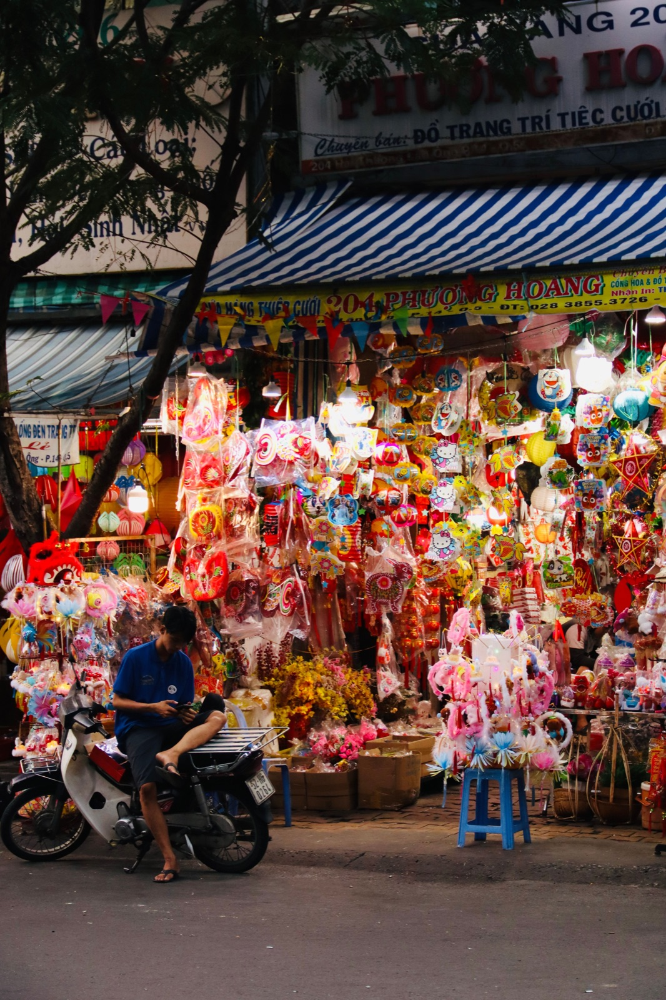
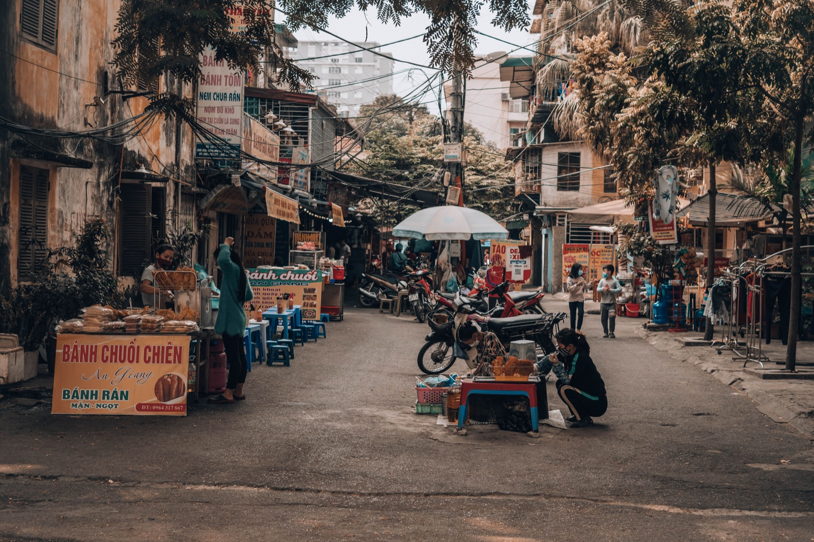

Как ездить на байке во Вьетнаме: инструкция для новичка

Первые минуты на дороге Нячанга выглядят хаосом: байки едут плотным потоком, кто-то сигналит, автомобили перестраиваются. Но у движения есть логика. Главное правило — быть предсказуемым: двигаться плавно, смотреть вперёд и не делать резких манёвров.
С чего начать новичку
Не выезжай впервые вечером или в час пик. Найди тихую прямую улицу утром и потрать 20–30 минут на старт, остановку, медленный разворот и торможение. Отдельно почувствуй передний и задний тормоз. На песке, мокрой разметке и плитке тормози особенно мягко.
Перед поездкой проверь шлем, зеркала, свет, поворотники и тормоза. Новичку обычно проще следить за дорогой на автомате — подробнее в сравнении автомата и механики.
Как держаться в потоке

- держись правее, но оставляй запас до припаркованных машин;
- смотри на несколько машин вперёд, а не под колесо;
- не стой в слепой зоне автобуса или грузовика;
- показывай поворот заранее и проверяй зеркало плечом;
- не копируй тех, кто едет против движения или на красный.
Короткий сигнал часто означает «я здесь» или «обгоняю», а не агрессию. Услышал его — сохраняй траекторию и оцени обстановку в зеркале.
Перекрёстки и поворот налево
Не стартуй мгновенно на зелёный: сначала посмотри в обе стороны. Поворачивая налево, включи сигнал заранее, плавно займи нужное положение и пропусти встречный поток. Если широкий перекрёсток пугает, безопаснее проехать прямо, развернуться в спокойном месте и вернуться.
Круговое движение
Снизь скорость до въезда, оцени транспорт на круге и не режь несколько полос. Перед своим съездом включи правый поворотник, но не рассчитывай, что остальные обязательно его заметили.
Пять ошибок туриста
- Резко остановиться. Сначала зеркало, потом плавное смещение вправо.
- Ехать слишком близко. Оставь дистанцию на внезапный манёвр.
- Забывать зеркала. Проверяй их перед изменением траектории.
- Ехать после алкоголя. Такси дешевле последствий.
- Считать 50сс игрушкой. Ему тоже нужны шлем и внимательность.
Что взять в первую поездку
Закрытый шлем, телефон с офлайн-картой, немного наличных, дождевик и фото документов. По юридической части прочитай статью о правах на 50сс.
Коротко
Начинай в спокойное время, двигайся плавно, оставляй дистанцию и проверяй пространство перед манёвром. Через несколько поездок поток станет понятнее, но осторожность должна остаться.